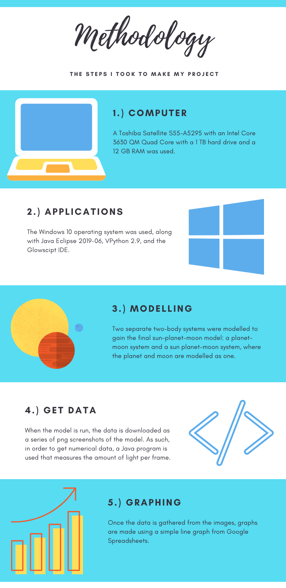

Overview
I chose to do a stem project in astronomy. While searching for
possible questions that I could try to solve, I found that although
over 4,000 exoplanets have been discovered, no exomoons have been
confirmed.
Abstract
Even though hundreds of moons exist in our solar system, and over
four thousand planets have been found outside of the solar system, no
extrasolar moons have been confirmed. The main method used by
researchers to detect exoplanets has been transiting, which utilises
changes in the parent star’s light as the exoplanet passes across its
disk. The objective of this project is to help find exomoons by
utilising patterns found by modelling a planet-moon-sun system into
an algorithm that finds a suitable match for a given system. First, a
model with adjustable orbital parameters was made using VPython
through the GlowScript 2.9 IDE. Then, the TTVs and TDVs of different
orbital parameters were analyzed using Java Eclipse. However, no
direct correlation between different orbital parameters and TTVs and
TDVs were found. Future extensions would include rewriting the three
body model and coding an algorithm that takes these variations and
find possible exomoons in readily available exoplanetary data.
Problem Statement
Though over 4,000 exoplanets have been discovered so far, and over a
hundred moons exist in the solar system, no exomoons have ever been
confirmed.
Overall Aim
The overall aim of this project is to engineer a way to detect
exomoons in a transit curve. The goal is to find a correlation
between changes in the orbital parameters of an exomoon and the
resulting TTV and TDVs of the system.
Background
Ever since antiquity, humankind has looked to the stars
for inspiration and the answer to the burning question of: Are we
alone? As the field of astronomy has progressed, this question has
been in the center of it. Advancements such as being able to detect
elements using spectroscopy, and understanding more about how our
solar system was formed have created a basis for the current study of
exoplanets, the focus of modern astrobiology. However, exoplanets
should not be the end-all be-all in the search for extraterrestrial
life. Exomoons are also viable options, as seen with the numerous
moons in our own solar system that are potentially habitable.
Exoplanetary science has evolved under the assumption
that Earth and our solar system are not special cases. It is assumed
that there exist other planets around stars that could potentially be
habitable by life. The very first exoplanet found orbiting around a
sun-like star, 51 Pegasib, was discovered in 1997 (Marcy, 1997) by
finding the wobble of the star that was caused by the planet. Since
then, more methods for finding exoplanets have been employed. The
most successful, the transiting method, has found thousands of
exoplanets, most notably through data collected by NASA’s Kepler
spacecraft. The transiting method measures the amount of light
emitted from a star over a certain interval of time. This is then
graphed, resulting in a “transit curve”. Researchers then look for
periodic dips in the data, known as “transits”, which are indicative
of an exoplanet orbiting the star. This method finds the period,
radius, and semi-major axis of the exoplanet’s orbit, but needs to be
cross-referenced with another method of detection in order to prove
that the exoplanet exists. There are major drawbacks to this method,
such as its reliance on the orbital inclination of the planetary
system being such that these “transits” are visible from Earth, and
the inherent presence of noise in the observational data. However,
this method has found more exoplanets than any other method combined.
Given that only a fraction of possible exoplanets can be found using
the transiting method, this means that, statistically, many
exoplanets exist that simply cannot be discovered using the transit
method. This also supports the theory that our planetary system is
not a unique one, and, by extension, that life could exist outside of
it.
The only model for a planet that harbors life is our own,
the Earth, though Mars and Venus could have been habitable in its
past. There are also multiple moons that could be habitable: Europa,
Enceladus, Titan, Io, and possibly Ganymede. Given the large number
of moons in the solar system, and the fact that potentially habitable
moons do exist, exomoons could potentially hold the same value for
finding life as exoplanets do. The same methods to detect exoplanets
could potentially be applied to the discovery of exomoons. However,
though various methods have been suggested to detect them, no exomoon
has ever been confirmed. Whether or not a planet could be habitable
depends on multiple factors: the type of planet and whether it has
the chemicals needed for life in an appropriate state. Likewise,
whether or not an exomoon is potentially habitable relies on its
initial composition. Additionally, the potential habitability of an
exomoon depends on the distance from its star and planet and radius
(Lammer, 2014), as well as the stability of its orbit and the maximum
orbital separation (Kaltenegger, 2010).
Methods for detecting an exomoon that have been proposed
so far revolve around two ways that the presence of an exomoon
changes the transit curve of its exoplanet: Transit Timing Variation
(TTV) and Transit Duration Variation (TDV) (Kipping, 2011). The
first, TTV, focuses on how the time intervals between each transit
could fluctuate based on how an exomoon would orbit the planet.
However, there are other phenomena besides a moon that have been
known to cause TTVs, such as trojans (very small bodies that orbit on
a planet’s outer Lagrangian points) and solar activity. An analysis
of a system’s TTVs can also lead to finding other exoplanets because
of their gravitational effects on other planets (Nesvorný, 2013). The
second way an exomoon could affect a transit curve, TDV, focuses on
how an exomoon could change the length of transiting itself. When TTV
and TDV effects agree with each other well, it is very possible that
the exomoon could exist.
What I want to do is create a flexible model of a
sun-planet-moon system that can take various initial conditions, such
as the semi-major axes of the planet and moon, the radii of the sun,
planet, and moon, the masses of the sun, planet, and moon, and the
luminosity of the star. I will then see if the TTVs and TDVs of a
system are dependent on any of these factors, and if so, which
factors affect them the most, and why. I will then try to find
exomoons by looking at a wide spread of available exoplanet
transiting data, model the given two body exoplanet-sun system, and
if that light curve is far enough away from the actual light curve, I
will add an exomoon to my model, find the light curve again, and see
if this light curve is more similar to the observed transit curve.
A challenge in modelling a star-planet-moon system is
that there are more than two bodies acting upon each other. When two
bodies act upon each other, the resulting model is predictable.
However, when more bodies act upon each other, the system is
ever-changing and cannot be predicted. The “three body problem,” a
case where three bodies act upon each other, has been especially
researched. There are special cases for three body systems in which
the model is periodic and solvable. In fact, 13 additional families
of solutions (Šuvakov, 2013) to the three body problem were
discovered in 2013, adding to the previous three that were already
known.

Procedure
A Toshiba Satellite S55-A5295 with an Intel Core 3630 QM
Quad Core with the Windows 10 operating system and a 1 TB hard drive
and a 12 GB RAM was used. Eclipse Java 2019-06 was downloaded, along
with an offline version of the Glowscript IDE.
VPython version 2.9 was chosen after a brief bit of
research, as it suited all of the needs for the first part of the
project. Example projects were looked at, and I attempted to make a
first model using the demos. I emailed Prof. Kipping and Dr Arnold,
both of whom responded. Primarily using the Glowscript online IDE on
glowscript.org, I made a three-body model of a star-planet-moon
system. At first, I tried to do this by working off of the demos
shown on glowscript.org, notably BinaryStar-VPython and
Stars-VPython. However, these models quickly broke when I tried
changing the orbital parameters. I then used the VPython knowledge I
learned from the demos to make my own model, from scratch. I got the
two-body system to work, but was unable to debug my code for a
three-body system. After failing to get the three-body system to
work, I decided to use the two-body system that I’d already created,
and made a three-body system using two two-body systems, imbedded in
each other, so that the planet-moon system was one body system, and
the sun-(planet-moon) system was another. I then tweaked various
orbital parameters and downloaded various frames, or screenshots of
the program at a point in time. I then made a script in Eclipse that
found all of these frames, and gave values for the amount of light
present in each. I graphed these data points in Google Docs to get
the resulting graphs.
All of the unanalyzed data was uploaded onto Google Drive
for use as a back-up. All of the collected data can be found
here
The data was analyzed on Eclipse. TTVs and TDVs were found by finding
the start time and end time of each transit, which were then printed
out, and graphed to see whether there was a direct correlation or
not. No direct correlation between TTVs, TDVs, and changes in moon or
planet mass or radius were found, contrary to the initial hypothesis.